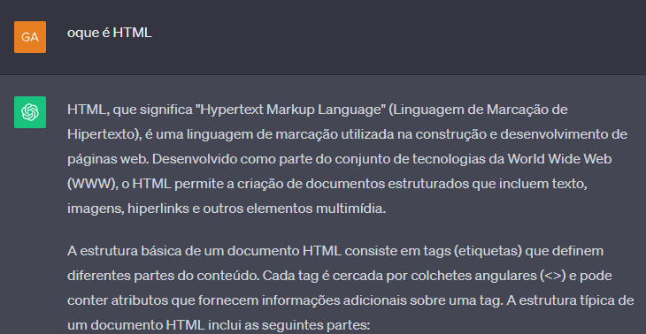

Oque é:
Inteligência Artificial (IA) é um campo da ciência da computação que se concentra no desenvolvimento
de sistemas capazes de realizar
tarefas que normalmente exigiam inteligência humana.
Essas tarefas incluem aprendizagem, raciocínio, resolução de problemas, reconhecimento de padrões,
compreensão de linguagem natural e tomada de decisões.
Em essência, a IA busca criar máquinas que possam imitar certos aspectos da inteligência humana e
executar tarefas de forma autônoma.
Existem diferentes abordagens para implementar IA, incluindo aprendizado de máquina, redes neurais,
lógica simbólica, entre outras.
Origem:
O conceito de Inteligência Artificial (IA) tem suas raízes em ideias que remontam à antiguidade,
mas o desenvolvimento prático da IA como um campo de estudo mais formal começou no século 20.
Aqui estão alguns marcos importantes na história da Inteligência Artificial:
1940: Máquinas de Turing e ENIAC:
O matemático Alan Turing desenvolveu a ideia de uma máquina universal,
que pode executar qualquer tarefa computacional.
Simultaneamente, durante a Segunda Guerra Mundial,
o ENIAC (Electronic Numerical Integrator and Computer),
um dos primeiros computadores eletrônicos,
foi construído nos Estados Unidos.
1950: Termo "Inteligência Artificial" é Criado:
O termo "Inteligência Artificial" foi criado por John McCarthy durante a Conferência de Dartmouth em 1956,
que é frequentemente considerado o marco inicial da IA como um campo formal.
1960: Lógica Simbólica e Redes Neurais:
Pesquisadores exploraram a lógica simbólica para representar o conhecimento e a resolução de problemas.
Além disso, as redes neurais, inspiradas no funcionamento do cérebro, foram estudadas.
1970 e 1980: Desenvolvimento e Desilusão:
A IA experimentou avanços inovadores, mas também gerou críticas e desilusão devido às expectativas exageradas.
Sistemas baseados em conhecimento e especialistas foram desenvolvidos.
1990 e 2000: Aprendizado de Máquina e Avanços Tecnológicos:
O foco mudou para técnicas de aprendizado de máquina, permitindo que sistemas aprendessem padrões a partir de dados.
Avanços na capacidade computacional e disponibilidade de grandes conjuntos de dados contribuíram para o desenvolvimento da IA.
2010 em Diante: Avanços em Redes Neurais Profundas:
Redes neurais profundas, especialmente arquiteturas como redes neurais convolucionais (CNNs) e redes neurais recorrentes (RNNs),
desempenharam um papel crucial no progresso da IA em tarefas como visão computacional e processamento de linguagem natural.
Como funciona:
A Inteligência Artificial (IA) engloba diversas abordagens e técnicas, mas em geral,
o funcionamento da IA pode ser entendido a partir de alguns conceitos-chave:
Aprendizado de Máquina:
Uma abordagem em que os algoritmos podem aprender padrões a partir de dados.
Algoritmos e Modelos:
São conjuntos de instruções que permitem que um sistema realize uma tarefa específica.
Treinamento do Modelo:
Para que um modelo de IA funcione, ele precisa ser treinado com dados relevantes. Durante o treinamento,
o modelo ajusta suas configurações para melhorar o desempenho em uma tarefa específica.
Dados:
O modelo aprende com exemplos fornecidos nos dados de treinamento e,
posteriormente, utiliza esse conhecimento para realizar soluções
específicas ou tomar decisões.
Redes Neurais:
São estruturas são inspiradas no funcionamento do cérebro humano,
compostas por camadas de neurônios artificiais que processam informações.
Processamento de Linguagem Natural (PLN):
As técnicas de Processamento de Linguagem Natural
são empregadas para que as máquinas entendam e gerem texto de maneira semelhante aos humanos.
Tomada de Decisões e Inferências:
Após o treinamento, o modelo pode fazer decisões estratégicas ou tomar decisões com base em novos dados de entrada,
podendo tambem lidar com situações ainda não vistas antes.
Atualização Contínua:
Em muitos casos, os modelos de IA podem ser atualizados continuamente à medida que novos dados estão disponíveis,
assim mantendo o desempenho ao longo do tempo e adaptando-se às mudanças nas condições ou nos padrões de dados.
Principais IA geradoras:
Existem diversos tipos de IA atualmente, porém, as mais conhecidas são as IA geradoras,
que são aquelas capazes de gerar imagens, textos, vídeos, áudios e etc, atraves de simples descrições dadas por nós.
Image Generator
Com a IA geradora de imagens,
podemos pedir para a IA criar QUALQUER imagem,
como imagens 3d, artes, logos e muito mais.
Imagem criada pelo gerador de imagem do Canva.
Vídeo Generator
Com a IA geradora de vídeos, podemos criar vídeos curtos ou animar imagens, porém, essa é uma IA em desenvolvimento,
então não podemos criar qualquer coisa igual a IA geradora de imagens.
Vídeo criado pela IA geradora do Canva.
Text Generator
Com a IA geradora de textos, ou chatgpt, pode-se criar TODO tipo de texto, dependendo da IA que vc está usando.
Atualmente essa é a IA mais avançada, utilizada e conhecida por nos, as pessoas utilizam ela para criação de textos, perguntas,
redações e muitas mais.

Exemplo de uma "conversa" no ChatGpt.